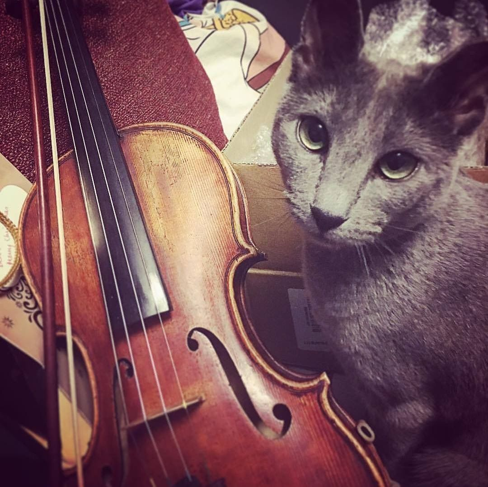
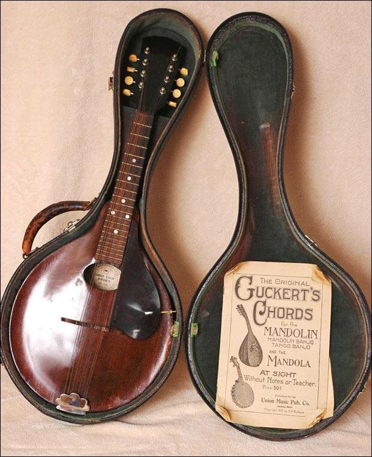

Miyan's Library ~
Hiya! I'm a fancy gay lady with perfect bangs that loves all things fandom, literature, and Marxism.
sq
You'll find reviews, musings, and plenty more from the delightful webmistress. My hobbies include conspiring with my sweet wife and devoting myself to fictional ships.
I play the


It's time for tea! ( )


- Location...?
Washington, D.C. & Cambridge, Massachusetts
- Languages?
English, a little Chinese, a lot less Korean
 https://i.ibb.co/DgzpdNSV/button-1.png
https://i.ibb.co/DgzpdNSV/button-1.png
Things I love
Currently, I'm especially invested in Supergirl, TLT (Gideon the Ninth), and Wynonna Earp. I'm listening to a lot of 90's alt-pop right now H
- Fandoms
Homestuck, revue starlight, idolm@ster shiny colors, takarazuka, supergirl (DC comics), arrowverse (Legends + Supergirl), carmilla (webseries), the locked tomb, wynonna earp, revolutionary girl utena, bandori, butterfly soup (VN), formula 1, yuri (nakamura asumiko <3)
- My Companions